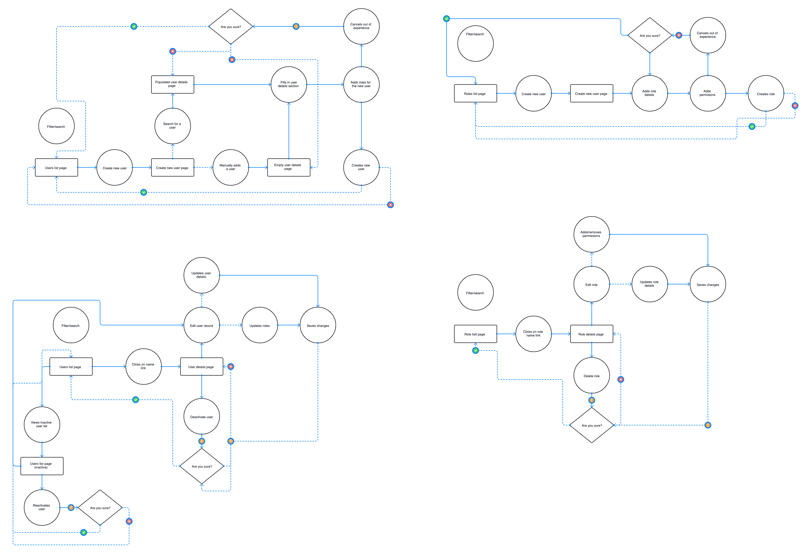

GEMS: User & roles management
Unlocking efficiencies for Sales Ops users
My Role: Lead product designer
Team: Front-end developers, Product Owner, Backend developers, myself as the Product Designer
Time: June-July 2023
- Business process change: Necessity to change existing business processes, such as enabling HR to update roles directly in Active Directory instead of sending emails to Sales Ops.
- Integration complexity: Integrating with external systems like Active Directory to automate user role updates and ensure synchronization.
- Establishing core UI/UX patterns: Setting the foundation for UI and UX patterns, navigation systems, overall product aesthetics, and functionality while addressing user role and permissions challenges.
- Balancing simplicity and functionality: Streamlining complex user and roles management in a large organization while maintaining a balance between simplicity and comprehensive functionality.
- Streamline user creation, record management, role assignment, and permissions.
- Ensure that users have role-based access to screens, enhancing security and efficiency.
- A boost in user satisfaction, particularly in their interactions with the user and role management features.
- A significant increase in the percentage of users with the correct system access.
- User creation workflow: Aimed to design a user-friendly workflow so Sales Ops users could effortlessly add new user records to the system, capturing information like name, email, role, and contact without a hitch.
- User editing interface: We envisioned an interface that not only allows editing of user records but would do so with simplicity and speed. Any modification, from basic details to role reassignment, should be a few clicks away.
- User activation/deactivation: Implement a feature that allows Sales Ops users to activate or deactivate user accounts. Deactivation should disable access while preserving historical data.
- User listing, search and filtering: Sales Ops users should be armed with a user list that was not static but dynamic, offering sorting and filtering options to quickly pinpoint users based on various attributes, such as location (sales region, sales territories, regions, district, center)
- Roles assignment on user profile: Develop a feature for assigning roles to a given user. With a clear list of available roles and a quick overview of assigned roles, Sales Ops users could save time, reduce errors, enhance control, improve the user experience, and boost overall productivity.
- Role creation: Envisioned not just a process, but an intuitive, clear, and straightforward interface for Sales Ops users to create and define new roles, embedded with descriptive details to aid clarity and purpose.
- Role editing and deletion: Needed an interface that not only facilitated the editing of role details but also ensured the deletion process was secure, calling to user's attention the consquences of it.
- Permission assignment: Design an interface that enables a precise and clear mapping of permissions to specific roles, assuring users were granted access tailored to their specific needs and no more. This should include a clear list of available permissions and an overview of assigned ones.
- Permission deletion: Enable Sales Ops users to remove permissions from roles if they are no longer needed, ensuring role definitions remained relevant and apt.
- Roles listing, filtering & search: Develop a roles list view with sorting, searching and filtering options based on permission attributes (service, action, scope, perspective). This should assist Sales Ops users in quickly finding and managing roles.
- Automated user record population from Active Directory: Create an interface that allows the user to be able to enter a username in a search field and initiate a "search" action. Upon doing so, the system should retrieve and populate user information from Active Directory for the user's review and editing. Once reviewed, the user should have the option to add the user to the system. Automating user record population from Active Directory would benefit Sales Ops users by saving time and ensuring data accuracy.
- Role synchronization: Through automating the synchronization of user roles with the changes occurring in JDE, GEMS would automatically update user roles whenever there were promotions, demotions, or exits, maintaining a reliable reflection of the actual organizational structure and user statuses.
- Role-based user lists: Create a feature that displays a list of all users associated with a specific role, making it easy for Sales Ops users to review and manage user-role assignments.
About the project
Background
In the world of business tools, GEMS (event management system), was the backbone of Bowlero, originally housed within Dynamics 365. But within this digital landscape, challenges lurked. Managing user roles and permissions was like navigating a complex maze, leading to inefficiencies and user frustration.
This case study is your backstage pass to the transformation of the user and roles management piece of the product (from Dynamics 365 to this new web application), where the core foundations of the new product were established, that has been driving the rest of the new GEMS product. Discover how we listened to our users, devised practical solutions, and streamlined the design process, resulting in a significant improvement for our Sales Ops users.
Ready to dive in?
The challenges tackled
Chapter 1:Morning clarity
It was the onset of a new month and a new project. Sitting in my home office, coffee in hand, I opened up my laptop and dove into the GEMS project. With every sip of my morning brew, I became more immersed in the feedback from the Sales Ops users of the old GEMS that was built in Dynamics 365. They felt lost in a system they should have easily navigated, struggling to manage user roles and permissions effectively.
I thought, “This isn’t just about tweaking a few buttons. This is about rethinking the whole user experience.” The GEMS system was ripe for change.
The central question emerged:
How might we implement a user roles and permissions system in the new GEMS product to let Sales Ops users efficiently manage user creation, record handling, role assignment, and permissions, all while keeping the experience intuitive?
The objectives became clear:
To measure the success, I needed to keep in mind these two main metrics:
Chapter 2:Brewing solutions & crafting user flows
Another morning, another challenge. In my cozy home office, where inspiration thrives, I wrapped myself in the warmth of a soft blanket as our team embarked on another virtual journey. Through the lens of Zoom, Miro, and FigJam, I dove headfirst into a whiteboarding exercise with the Product Owner. Thanks to her great experience with UX Stategy, this collaboration session once again felt like a breeze.
Our discussion sparked a flood of potential solutions, all aimed at enhancing the user experience within GEMS. Despite the physical distance, the collaborative energy of our remote session made my home office feel like a hub of creativity, a place where innovation thrives, and challenges are met with enthusiasm.

User management interface plans
Roles and permissions management interface plans
Automation plans
Setting the path: User flows unveiled
As I settled into my workspace as per usual, I took off on the task of crafting more detailed user flows. These digital pathways, born from our brainstorming and ideation sessions, held the promise of offering our Sales Ops users a more seamless and intuitive journey through the complex landscape of GEMS.
These user flows enabled me and my team to spot potential roadblocks and bottlenecks early in the design process, ultimately saving us valuable time and resources in development.
Chapter 3:From concept to Figma canvas
During the design phase, my primary focus was on the "craft" of transforming imaginative solutions into user-friendly interfaces that not only appealed visually but also seamlessly supported users in accomplishing their tasks. I shouldered the responsibility of ensuring that the final design didn't merely check functional boxes but seamlessly melded with the product's established design identity and brand essence. This comprehensive approach formed the cornerstone of my mission to craft a visually cohesive and user-centric journey within GEMS.
Perfecting the blueprint: High-fidelity wireframing and iteration
Relying on the user flows as my guiding framework, I dived into designing the high-fidelity wireframes in Figma. Each wireframe felt like an idea coming to life, a significant step closer to our final product.
I initiated design reviews with our Product Owner (PO) to ensure the designs aligned with our goals and met user needs. Her insights were invaluable, helping me refine the wireframes further.
Following that, I facilitated design reviews with our dedicated development team to ensure the designs were not only visually compelling but also feasible and efficient to implement.
Throughout this iterative journey, I engaged in constant feedback sessions, actively listening to suggestions and making necessary adjustments and enhancements. This collaborative approach allowed me to fine-tune our design dynamically in response to real-world considerations.
"Coloring in": UI design & filling the gaps with component creation
When addressing the user interface aspect of the wireframes, my primary focus was on maintaining consistency, meeting accessibility standards while enhancing its visual appeal and user-friendliness. Drawing from our design system was key to achieving this goal.
If you're curious to learn more about the design system that shapes GEMS, I invite you to explore the design system case study. It's a valuable resource that reveals how I built a design system from the ground up and integrated it into the GEMS project. It shows how this framework brings consistency and purpose to GEMS, offering a behind-the-scenes look at its visual identity and consistency. Check the design system case study related to GEMS.
By adhering to the principles and patterns set within this phase, I established design standards that would serve as a blueprint for the rest of the product. This consistency in design ensured that as GEMS expanded and evolved, it would continue to provide users with a familiar and intuitive experience, setting the stage for a successful and user-centric product journey.
Hearing from the Users
With the designs nearly finalized, it was time to hear from our primary audience: the Sales Ops users. We organized walkthrough sessions, and the feedback was encouraging. All users appreciated the clean and straightforward layout, with only a few minor adjustments suggested.
The journey to design the new GEMS was challenging yet fulfilling. Each step, from the initial concepts to user feedback, ensured GEMS was going to be a reliable and efficient tool for its users.

Chapter 4:Design deCODEd; the hand-off
The design phase had come to a close, and a sense of eager anticipation filled the room. It was now time to ensure that my designs seamlessly made their way into the hands of the developers, ready to be transformed into a functional product.
Before this hand-off could take place, a critical step had been accomplished: the design had undergone a thorough sign-off process. This sign-off was similar to giving a green light, indicating that the design was well-prepared, thoroughly reviewed, aligned with our project's goals and user needs.
To ensure a smooth transition from design to development, I created a separate development file. This file, once handed over, was meant to remain unchanged, preserving the original design. If changes were needed, I implemented a changelog section within the development file to document and communicate modifications effectively.
- These little notes acted as concise guides that offered insights into how a particular design element should be implemented. They might contain details about functionality, behavior, design considerations, or even technical requirements.
- This quick-reference approach helped developers grasp the details in context without searching around. It's like leaving little helpful messages that guided them as they work.
- The core idea was simple: Make the bridge between design and development as seamless as possible by attaching relevant, concise information right where it's needed.
Technical documentation & dev notes
The pros of integrating documentation, notes to devs, or specs were notable. These resources offered an in-depth understanding of how specific design elements should be translated into functional features. Whether detailing user interactions, addressing behavioral nuances, considering design aesthetics, or laying out technical prerequisites, these sections made sure that when developers began working on the handed-off designs, they had all the important info they needed to understand it well.
- For developers and stakeholders alike, this fusion clarified the purpose behind each design decision. By illustrating the user's journey step-by-step, it became simpler for the developers to understand the desired outcomes and functionalities.
- During presentations or after hand-off, the combined visuals spoke volumes. Stakeholders could trace a user's path, feeling more involved in the design story, leading to fewer questions and more productive discussions.
- This combination also served as my safety net. By reviewing the user flows within the design context, I could spot potential usability problems before they became real issues during development.
- And if there was ever a need for an interactive prototype? Well, these integrated wireframes made the transition a breeze.
User flows integrated into wireframes
The fusion of user flows and wireframes brought forth a host of advantages. First and foremost, it enhanced the clarity of design intent for both developers and stakeholders. By visually mapping user interactions, developers could more readily grasp intended functionalities, leading to a final product that closely aligns with the envisioned user experience.